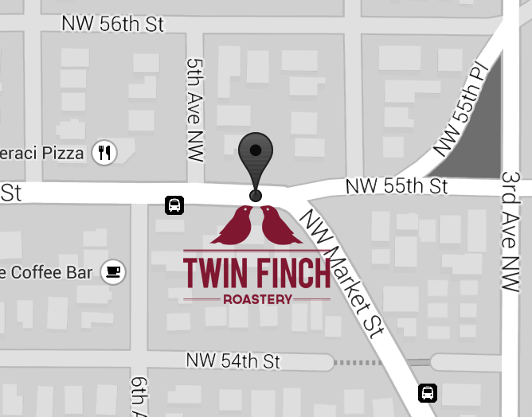

“This extraordinary coffee almost defies description with its aromatic complexity while retaining a classic clarity of structure.” - Coffee Review
A BIT ABOUT US
Twin Finch Roastery is an authentic micro-roastery; small, dedicated, and highly focused on quality. We have a constantly evolving, hand picked selection of fine coffee origins and delicious blends engineered to help you brew a cafe-quality cup at home.
PRODUCTS&ORDERS
FINCH HOUSE BLEND
Medium Roast
Hint of citrus, complemented by flavors of dark chocolate, peanut and light pepper notes.
Cajamarca & Moyobamba Regions, Peru
BUY NOWSUNRISE
Light Roast
Light, fruity acidity which complements its fully nutty body and unique spicy tones.
La Chiapas, Mexico
BUY NOWMIDNIGHT
Dark Roast
Roasted into second crack for a big, bold and dark cup. Beans display oil.
Latin America
BUY NOWESPRESSO
Clean, a little roasty, sumptuous crema, unfussy, delicious.
Latin America, Africa, Indonesia
BUY NOWEVENING OAK
Medium-Dark Roast
Our featured roast of the season. Pungently rich and complex with hints of night-blooming flowers and coriander in aroma and cup.
Eastern Java, Indonesia
BUY NOWTHE REST OF OUR STORY
Our coffee is roasted in a hot air, refractory lined roaster with an extraordinary level of control. The significance of relying on a high volume of hot air to roast coffee beans can't be understated. Most small coffee roasters use a single stage burner which offers virtually no control during the roasting process. The refractory significantly reduces hot spots which can damage coffee beans and produces a much more even roasting environment.
Online orders usually ship quickly and arrive within three business days. We only ship the freshest coffee and your satisfaction is guaranteed. Our rotating, featured coffees are roasted on a more limited basis and your order may be held until the next time a batch hits the roaster. We only ship whole bean, but will grind for you in-store per request.
HAPPENINGS
Jamie
“This coffee is so good, the smell of freshly ground coffee is amazing. I will be getting a ton of work done today!”

Monica
“This coffee is so good, the smell of freshly ground coffee is amazing. I will be getting a ton of work done today!”
Rachel
“This coffee is so good, the smell of freshly ground coffee is amazing. I will be getting a ton of work done today!”
BREW TIPS
Brewing a perfect cup of coffee is the weakest link in the full enjoyment of fine coffee. Buying the finest coffee is only the beginning and can go for naught if the brewing is not done correctly. It is very easy to ruin otherwise excellent coffee with improper brewing. We realize you would like to hear that once you have purchased excellent coffee beans, the rest is as simple as pushing a button, but, all we can say is: it's time to "wake up and smell the coffee".
CONTACT US
457 NW Market St. Seattle, WA 94823 (394)423–4523